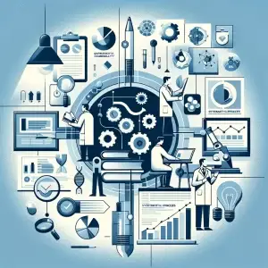
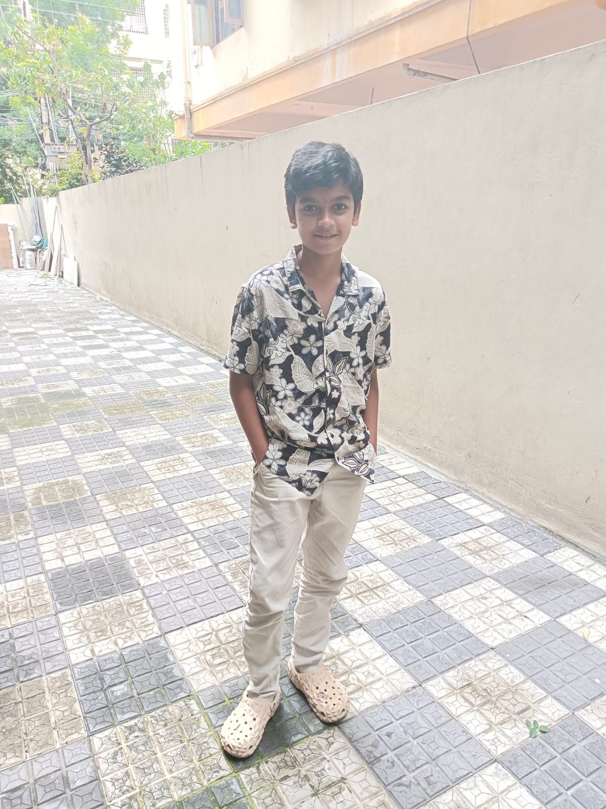

visually represents the interconnected world enabled by technology. The central globe symbolizes global connectivity and communication, while the surrounding laptops illustrate the role of digital devices in bridging distances. The glowing platform beneath suggests a hub of innovation, likely representing data exchange, cloud computing, or the internet as the foundation for this connectivity.
.

it illustrates the intersection of science, technology, and research in a highly interconnected and systematic environment. The central gear mechanism represents the foundation of innovation and problem-solving, symbolizing how different fields of science and technology work together like a well-oiled machine. Surrounding this core are various icons and visuals that highlight specific aspects of scientific research, including laboratory equipment, charts, and molecular diagrams.
represents a collaborative learning or research environment, where a group of individuals is actively engaged in academic or professional pursuits. The central focus is on the concept of "Research," highlighted on the board, surrounded by various scientific and academic symbols such as charts, molecular structures, and laboratory equipment. These elements signify the process of knowledge discovery and innovation.
depicts a high-tech workspace dedicated to scientific research and innovation. The central focus is a computer monitor displaying a hub of interconnected symbols, representing data, ideas, and processes linked together. These icons highlight the diverse aspects of research, such as data analysis, experimentation, and innovation.

iam the star of this website, i created it

Description 6